Speaking Part 2: describe una foto
-
Here is your photograph. It shows a family at home. Please tell us what you can see in the photograph.
Foto: Land O'Lakes, Inc. en Unsplash Cosas que puedes decir de esta foto
- In this photo I can see a family in their kitchen.
- The mother is mixing something in a big green bowl with a wooden spoon.
- She's smiling, so I think she's enjoying it.
- She's carrying a little boy on her back. He's looking at the bowl.
- On the left, the father is holding a baby.
- They're probably making a cake or preparing lunch together.
- The kitchen is bright and modern, with wooden cupboards.
- It looks like a happy family moment, maybe at the weekend.
- I like cooking with my family too, because it's fun and relaxing.
-
Here is your photograph. It shows people cooking. Please tell us what you can see in the photograph.
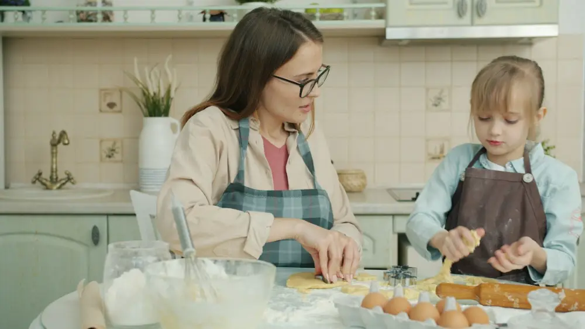
Foto: Vitaly Gariev en Unsplash Cosas que puedes decir de esta foto
- This picture shows a woman and a little girl in a kitchen.
- I think they're mother and daughter.
- They're both wearing aprons because they're cooking.
- They're making something with dough, maybe biscuits or a pie.
- On the table there are eggs, flour and a bowl.
- The woman is wearing glasses and the girl has blonde hair.
- The girl looks very concentrated. She's helping her mum.
- In the background there's a plant and some kitchen cupboards.
- It's a good way to teach children how to cook.
-
Here is your photograph. It shows people at home. Please tell us what you can see in the photograph.
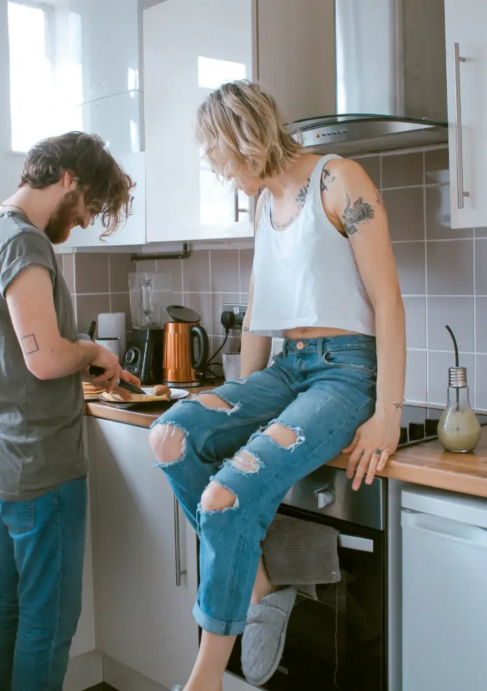
Foto: Toa Heftiba en Unsplash Cosas que puedes decir de esta foto
- In this photo there's a young couple in a small kitchen.
- The man has a beard and he's preparing some food.
- The woman is sitting on the kitchen counter.
- She's wearing a white top and ripped jeans.
- She's got tattoos on her arms.
- They're looking down, maybe at what he's cooking.
- Behind them there's a kettle and a blender.
- It looks like they're at home on a relaxing morning.
- I think they're making breakfast together.
-
Here is your photograph. It shows people eating together. Please tell us what you can see in the photograph.
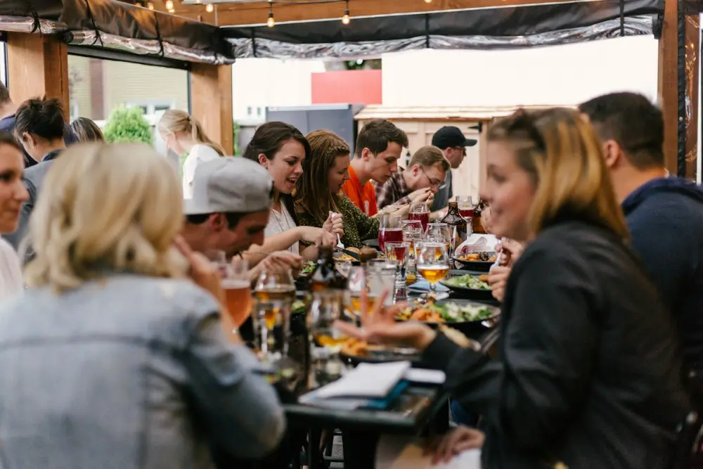
Foto: Priscilla Du Preez en Unsplash Cosas que puedes decir de esta foto
- In this photo I can see a big group of people having a meal together.
- They're sitting at a long table, maybe on a restaurant terrace.
- There are lots of glasses and plates of food on the table.
- Some of them are drinking beer or juice.
- On the right, a woman with fair hair is laughing.
- A man in the middle is wearing a cap.
- Everybody is talking and they all look happy.
- I think they're friends or colleagues celebrating something.
- I love eating out with friends because it's a great way to relax.
-
Here is your photograph. It shows people celebrating. Please tell us what you can see in the photograph.
Foto: Negley Stockman en Unsplash Cosas que puedes decir de esta foto
- This photo is taken from above.
- I can see a table with lots of different dishes.
- There are salads and bowls of vegetables.
- Some people are holding glasses and making a toast.
- The drinks look like cocktails or fruit juice, with ice.
- I can only see their hands, not their faces.
- I think they're celebrating something, maybe a birthday.
- The table is dark, maybe it's made of marble.
- It looks like a really nice meal in a restaurant.
-
Here is your photograph. It shows a celebration. Please tell us what you can see in the photograph.
Foto: Nathan Dumlao en Unsplash Cosas que puedes decir de esta foto
- In this picture there are three young children.
- They're blowing out the candles on a birthday cake.
- The girl in the middle has long hair and she's wearing a black top.
- The two children next to her have blonde hair.
- They're very close to each other, so maybe they're brothers and sisters.
- I can only see the top of the candles at the bottom of the photo.
- It's probably the birthday of the girl in the middle.
- They look excited and happy.
- When I was a child, I always had a party on my birthday.
-
Here is your photograph. It shows people shopping for food. Please tell us what you can see in the photograph.
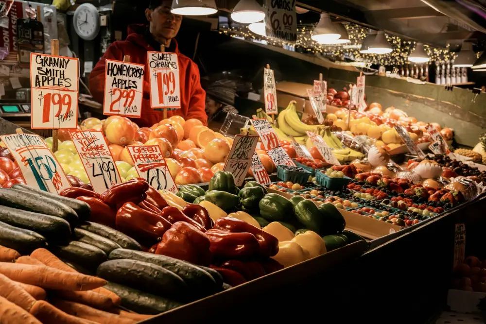
Foto: Connor Gan en Unsplash Cosas que puedes decir de esta foto
- This photo shows a fruit and vegetable stall in a market.
- There's a lot of fresh food: apples, oranges, bananas and peppers.
- At the front there are cucumbers and carrots.
- There are lots of signs with the prices, for example 1.99 for apples.
- Behind the stall there's a man wearing a red jacket. I think he's the seller.
- There are lamps above the fruit and a clock on the wall.
- The colours are very bright: red, green, orange and yellow.
- It looks like an indoor market in a city.
- I prefer buying fruit in markets because it's fresher.
-
Here is your photograph. It shows a market. Please tell us what you can see in the photograph.
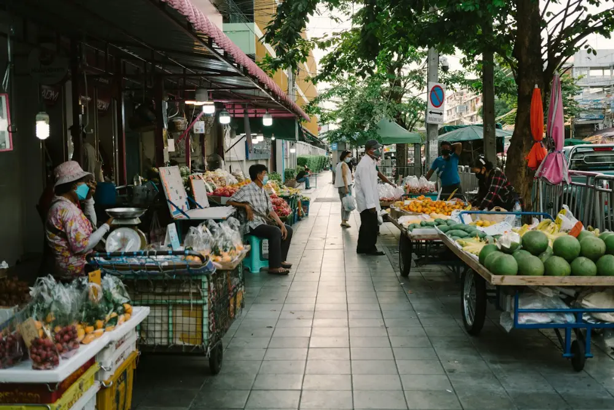
Foto: Markus Winkler en Unsplash Cosas que puedes decir de esta foto
- In this photo I can see a street market.
- There are stalls and carts on both sides of the pavement.
- They're selling fruit and vegetables, for example watermelons.
- On the left, a woman with a hat is sitting next to some scales.
- Some people are wearing face masks.
- In the middle, a man in a white shirt is standing on the pavement.
- There are trees and umbrellas in the background.
- It looks quite hot and sunny, maybe in Asia.
- I think it's early in the morning because it isn't very busy.
-
Here is your photograph. It shows a market. Please tell us what you can see in the photograph.
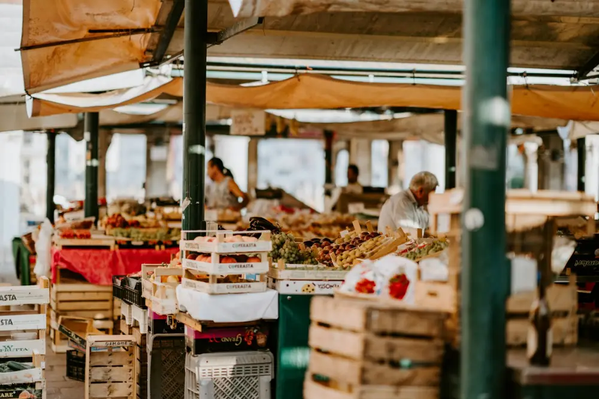
Foto: Annie Spratt en Unsplash Cosas que puedes decir de esta foto
- This picture shows an outdoor market with a roof.
- There are lots of wooden boxes full of fruit and vegetables.
- Above the stalls there are orange covers to protect them from the sun.
- In the background, an older man is working at a stall.
- There's also a woman behind the fruit.
- There are green metal posts holding the roof.
- It isn't very busy, so maybe it's early or late in the day.
- It looks like a traditional market in a European city.
- I'd like to visit a market like this on holiday.
-
Here is your photograph. It shows people in bad weather. Please tell us what you can see in the photograph.
Foto: Omar Ramadan en Unsplash Cosas que puedes decir de esta foto
- In this photo two people are walking in the rain.
- They're carrying black umbrellas.
- They're wearing warm coats, so it's probably cold.
- They're walking next to a river.
- In the background I can see Tower Bridge, so this is London.
- The sky is grey and cloudy and the ground is wet.
- There are some empty benches because of the bad weather.
- I think it's autumn or winter.
- Rainy weather is typical in England, so you always need an umbrella.
-
Here is your photograph. It shows a city in bad weather. Please tell us what you can see in the photograph.
Foto: Tintinburgh en Unsplash Cosas que puedes decir de esta foto
- This photo shows a long shopping street in a city.
- It's raining and the ground is very wet.
- Some people are walking with umbrellas.
- On the right there's a red telephone box, so I think it's in the UK.
- There are lots of shops on both sides of the street.
- In the background there are old buildings and some building work.
- The light is strange: the sky is quite bright, but it's raining.
- It isn't very crowded, maybe because of the weather.
- I don't like going shopping when it's raining.
-
Here is your photograph. It shows people travelling. Please tell us what you can see in the photograph.
Foto: Brooklen Ashleigh en Unsplash Cosas que puedes decir de esta foto
- In this picture there's a woman at a train station.
- We can see her from behind.
- She's got long red hair and she's wearing a black coat and trainers.
- She's pulling a grey suitcase with a white bag on top.
- She's walking on the platform, maybe to get on a train.
- The station looks very modern and clean.
- I think she's going on a trip or a business trip.
- She's travelling alone.
- I like travelling by train because it's comfortable and you can read.
-
Here is your photograph. It shows people travelling. Please tell us what you can see in the photograph.
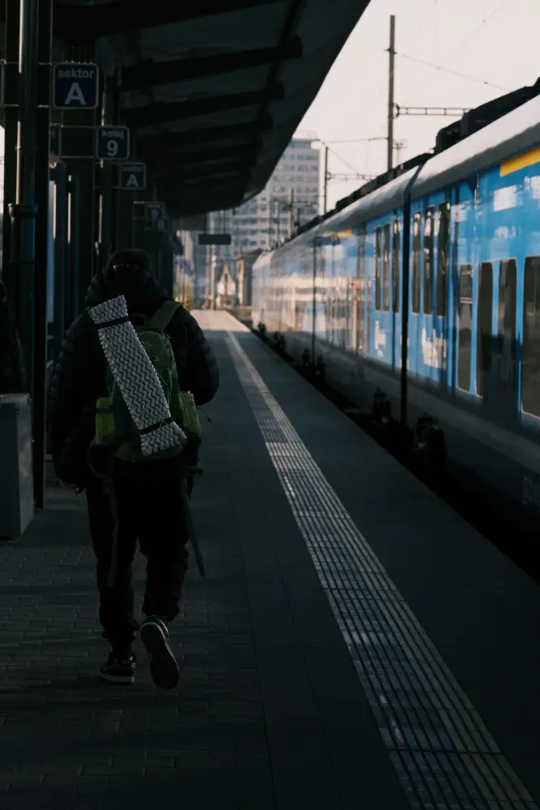
Foto: Jan Macháček en Unsplash Cosas que puedes decir de esta foto
- This photo shows a train station.
- A person with a big backpack is walking along the platform.
- There's a blue and white train on the right.
- Above the platform there are signs with letters and numbers.
- It's quite dark under the roof, but the sky outside is bright.
- I think it's early in the morning or in the evening.
- The person is probably a backpacker going on a long trip.
- The station isn't busy. There's nobody else on the platform.
- I'd love to travel around Europe by train.
-
Here is your photograph. It shows people getting around. Please tell us what you can see in the photograph.
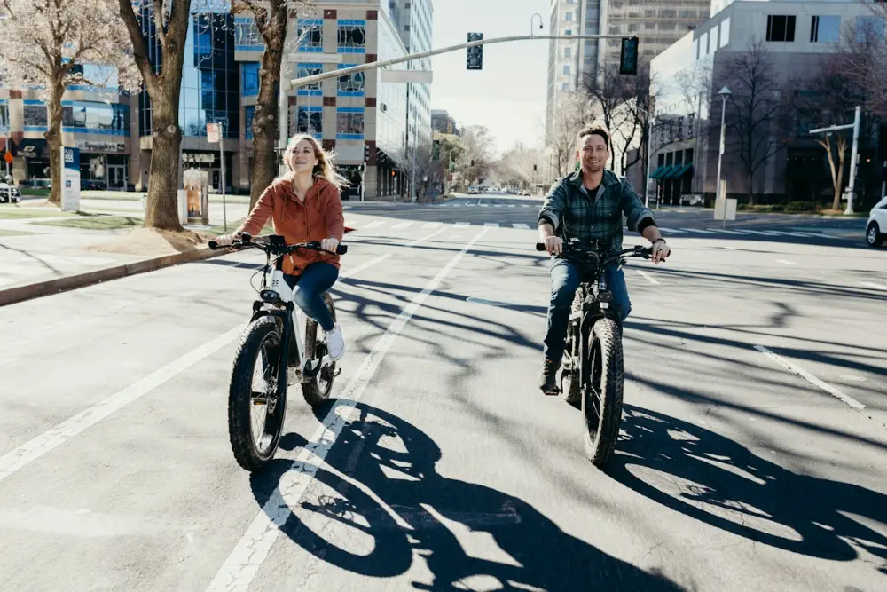
Foto: Himiway Bikes en Unsplash Cosas que puedes decir de esta foto
- In this photo a man and a woman are riding bikes.
- They're cycling down a wide street in a city.
- The bikes have very big, thick tyres. I think they're electric bikes.
- The woman is wearing a red jacket and jeans.
- The man has a beard and he's wearing a checked shirt.
- They're smiling, so they're enjoying the ride.
- It's a sunny day and there are long shadows on the road.
- There are tall buildings and trees in the background.
- Cycling is a good way to get around the city and it's good for the environment.
-
Here is your photograph. It shows a busy city. Please tell us what you can see in the photograph.
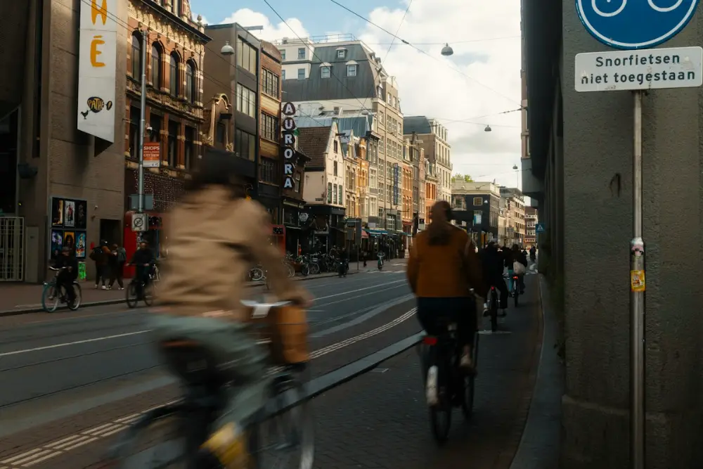
Foto: Douglas Schneiders en Unsplash Cosas que puedes decir de esta foto
- This photo shows a busy street in a European city.
- Some people are riding bikes along the street.
- The person on the left is moving fast, so they look a bit blurry.
- There are old brick buildings on both sides.
- There's a sign on the wall in Dutch, so I think it's Amsterdam.
- Some people are walking on the pavement.
- The sky is blue with some clouds.
- In cities like this, lots of people go everywhere by bike.
- I think there should be more bike lanes in my city.
-
Here is your photograph. It shows people on holiday. Please tell us what you can see in the photograph.
Foto: Anneliese Phillips en Unsplash Cosas que puedes decir de esta foto
- This photo shows a beach. It's taken from above.
- The sea is blue and there are some waves.
- There are some people on the sand and near the water.
- Some children are playing and building sandcastles.
- A few people are walking along the shore.
- It's a sunny day and the sand looks warm.
- It isn't very crowded, so it looks peaceful.
- At the bottom of the photo there are some plants.
- I'd love to spend a day at a beach like this.
-
Here is your photograph. It shows people on holiday. Please tell us what you can see in the photograph.
Foto: dylan nolte en Unsplash Cosas que puedes decir de esta foto
- In this photo I can see a woman and two children on a beach.
- It's sunset, so the sky is orange and yellow.
- We can only see their silhouettes because the sun is behind them.
- The woman is carrying a small child in her arms.
- A girl is standing next to her and pointing at something.
- Behind them there's the sea and some mountains.
- It looks calm and peaceful.
- I think they're on holiday and they're enjoying the view.
- Watching the sunset on the beach is one of my favourite things.
-
Here is your photograph. It shows free time outdoors. Please tell us what you can see in the photograph.
Foto: Slava Auchynnikau en Unsplash Cosas que puedes decir de esta foto
- In this photo there's a man hiking in the mountains.
- He's carrying a very big backpack.
- He's walking up a hill covered with grass and rocks.
- In the background there's a high mountain with snow on top.
- There are some clouds around the mountain.
- The sky is grey, so the weather might change.
- He's alone, so I think he's an experienced hiker.
- It looks cold up there, so he's probably wearing warm clothes.
- I'd like to try hiking in the mountains, but I'd go with friends.
-
Here is your photograph. It shows friends having fun outdoors. Please tell us what you can see in the photograph.
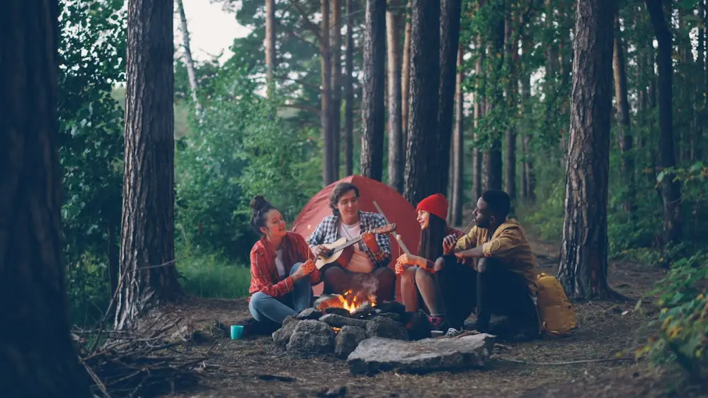
Foto: Vitaly Gariev en Unsplash Cosas que puedes decir de esta foto
- This photo shows four friends camping in a forest.
- They're sitting around a campfire.
- One man is playing the guitar.
- Some of them are cooking something on sticks, maybe marshmallows.
- There's a red tent behind them.
- There are very tall trees all around.
- One woman is wearing a red hat.
- They look relaxed and happy.
- Camping is a great way to disconnect from technology.
-
Here is your photograph. It shows people enjoying music. Please tell us what you can see in the photograph.
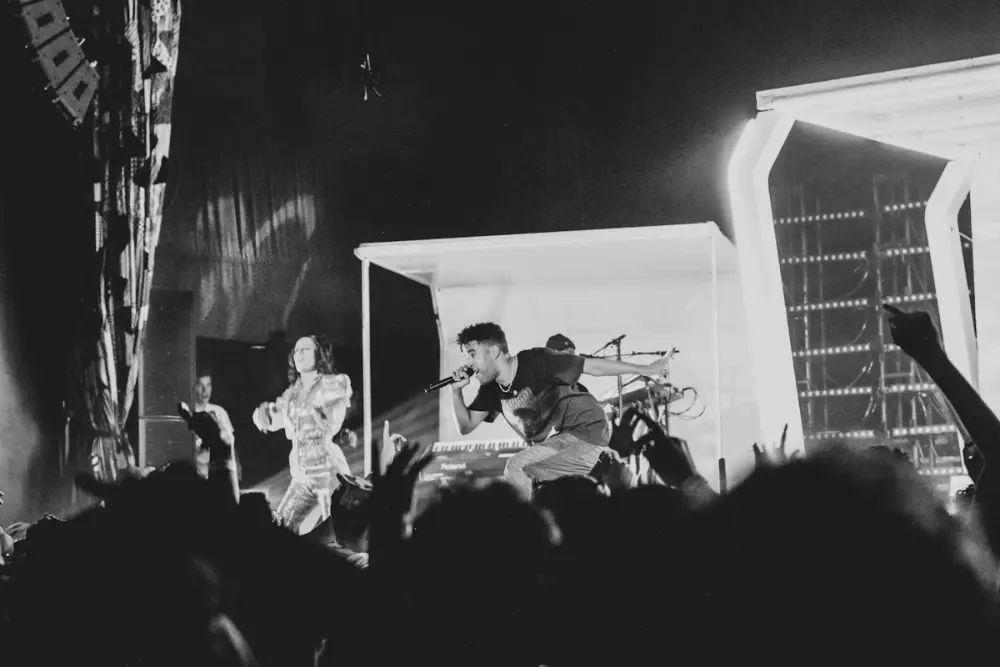
Foto: Mareko Tamaleaa en Unsplash Cosas que puedes decir de esta foto
- This is a black and white photo of a concert.
- On the stage there's a man singing into a microphone.
- Next to him, a woman in a dress is dancing.
- At the front I can see the audience. Some people have their hands in the air.
- There are big lights on the stage.
- It's dark, so it's probably at night.
- The audience looks very excited.
- I think it's a pop or hip hop concert.
- I love live music. The atmosphere at a concert is amazing.
-
Here is your photograph. It shows people at work. Please tell us what you can see in the photograph.
Foto: Ngital en Unsplash Cosas que puedes decir de esta foto
- In this photo I can see six people in a meeting.
- They're sitting around a big table in an office.
- Most of them are using laptops.
- There's a black mug on the table.
- Two women and four men are taking part.
- They look serious. I think they're discussing a project.
- Behind them there are big windows and tall buildings.
- The office looks modern and bright.
- I think working in a team is important, but long meetings can be boring.
-
Here is your photograph. It shows people studying. Please tell us what you can see in the photograph.
Foto: Fajar Herlambang STUDIO en Unsplash Cosas que puedes decir de esta foto
- This photo shows students in a classroom.
- They're doing an exam.
- They're sitting at wooden desks and writing on paper.
- They're all wearing the same blue patterned shirts, so I think it's a school uniform.
- The boy at the front is concentrating on his answers.
- Behind him there's a girl wearing a headscarf.
- Nobody is talking. It's very quiet.
- I think they're secondary school students.
- I always feel nervous before an exam.
¡Tiempo!
¿Has hablado sin parar? Si te has quedado en blanco, repítelo con las frases útiles de abajo.
Frases útiles (toca para oírlas)
Describe la foto: dónde es, quién aparece, qué hacen, qué llevan y cómo se sienten. Si no sabes una palabra, explícala con otras. Las fotos y sus frases de ayuda están en practicar/sp-2.html.